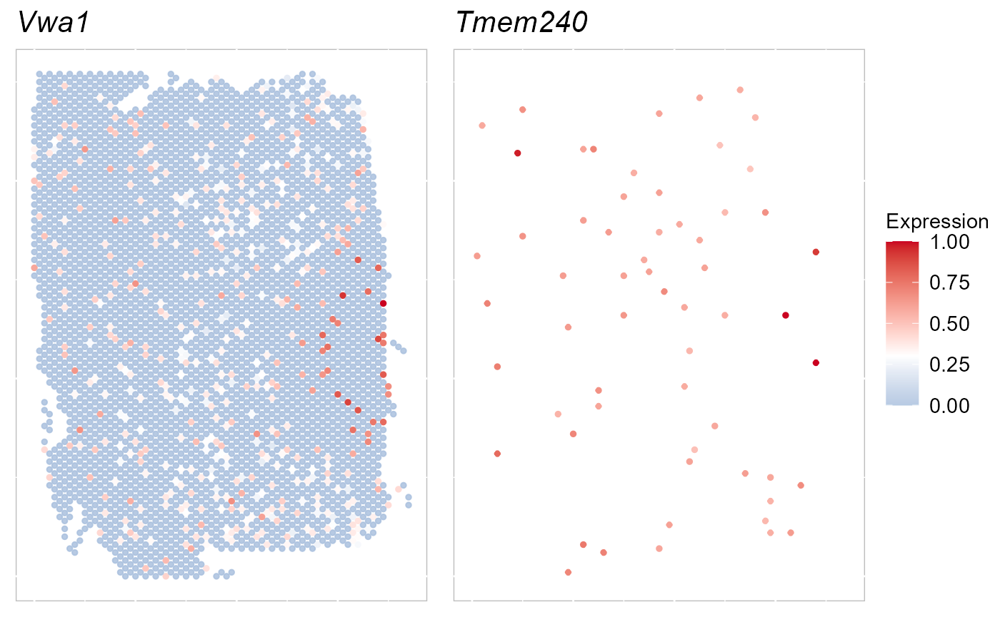
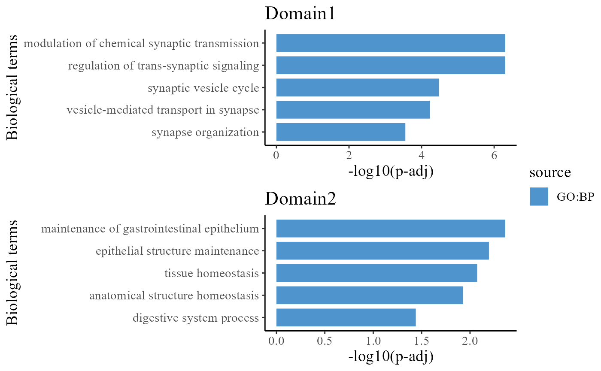

A basic overview of single data analysis
Compiled: 二月 13, 2023
Source:vignettes/single_basic_tutorial.Rmd
single_basic_tutorial.RmdOverview
This tutorial demonstrates how to use SRTpipeline (>=0.1.0) to analyze a spatially-resolved transcriptomics (SRT) data. This tutorial will cover the following tasks, which we believe will be common for many SRT data analyses:
- Normalization
- Feature selection, including detecting spatially-variable features
- Dimensional reduction
- Clustering
- Interactive visualization
- Integration with single-cell RNA-seq data
- Working with multiple slices
Prepare SRTProject
For this tutorial, we will introduce how to create a SRTProject object with single SRT sample using SRTpipeline that includes an introduction to common analytical workflows for a single data batch. Here, we will be taking a spatial transcriptomics dataset (SampleID: 151672) for human dorsolateral prefrontal cortex (DLPFC) as an example. There are 4015 spots and 33538 genes that were sequenced on the 10x Visium platform. Our preprocessed data can be downloaded here, and the raw data can be found here.
First, we loaded the required packages with the command:
Next, we download the data to the current working path for the followed analysis by the following command:
githubURL <- "https://github.com/feiyoung/PRECAST/blob/main/vignettes_data/dlpfc_151672.rda?raw=true"
# download.file(githubURL,'dlpfc_151672.rda',mode='wb')Then load to R. The data is saved in a Seurat object named dlpfc_151672.
load("dlpfc_151672.rda")How to read the raw sptial transcriptomics data?
In addition, if users’ data are in the raw form from spaceranger. We start by reading in the data. The read10XVisium() function reads in the output of the spaceranger pipeline from 10X, returning a unique molecular identified (UMI) count matrix and a spatial coordinates file. The values in count matrix represent the number of molecules for each feature (i.e. gene; row) that are detected in each spot (column). The spatial information of all spots is represented by the spatial coordinates file.
SRTProject object. The object serves as a container that contains both data (like the count matrix, spatial coordinates) and analysis (like PCA, or clustering results) for a spatial transcriptomics dataset. For a technical discussion of the SRTProject object structure, check the ‘SRTProject-class’.
What does data in a count matrix look like?
# Let's examine a few genes in the first five spots
count <- dlpfc_151672[["RNA"]]@counts
count[1:5, 1:5]## 5 x 5 sparse Matrix of class "dgCMatrix"
## AAACAAGTATCTCCCA-1 AAACACCAATAACTGC-1 AAACAGAGCGACTCCT-1
## ENSG00000243485 . . .
## ENSG00000237613 . . .
## ENSG00000186092 . . .
## ENSG00000238009 . . .
## ENSG00000239945 . . .
## AAACAGCTTTCAGAAG-1 AAACAGGGTCTATATT-1
## ENSG00000243485 . .
## ENSG00000237613 . .
## ENSG00000186092 . .
## ENSG00000238009 . .
## ENSG00000239945 . .The . values in the matrix represent 0s (no molecules detected). Since most values in an count matrix are 0, a sparse-matrix representation is necessary to save memory and speed savings for data.
meta_data <- dlpfc_151672@meta.data
head(meta_data[, 1:5])## orig.ident nCount_RNA nFeature_RNA barcode
## AAACAAGTATCTCCCA-1 SeuratProject 5002 2286 AAACAAGTATCTCCCA-1
## AAACACCAATAACTGC-1 SeuratProject 5826 2638 AAACACCAATAACTGC-1
## AAACAGAGCGACTCCT-1 SeuratProject 3813 1872 AAACAGAGCGACTCCT-1
## AAACAGCTTTCAGAAG-1 SeuratProject 3379 1630 AAACAGCTTTCAGAAG-1
## AAACAGGGTCTATATT-1 SeuratProject 6623 2885 AAACAGGGTCTATATT-1
## AAACATTTCCCGGATT-1 SeuratProject 3704 1974 AAACATTTCCCGGATT-1
## sample_name
## AAACAAGTATCTCCCA-1 151672
## AAACACCAATAACTGC-1 151672
## AAACAGAGCGACTCCT-1 151672
## AAACAGCTTTCAGAAG-1 151672
## AAACAGGGTCTATATT-1 151672
## AAACATTTCCCGGATT-1 151672We check the data by printing it. We can see there are 4015 spots and 33538 genes.
dlpfc_151672## An object of class Seurat
## 33538 features across 4015 samples within 1 assay
## Active assay: RNA (33538 features, 0 variable features)Check the meta data: each row contains the meta information of a spot with row name such as AAACAAGTATCTCCCA-1, which consists of the barcode, to identify each spot in RNA sequencing, separator - and a number 1; note that the columns, row, col, imagerow and imagecol, save the spatial information of each spot, in wihch row and col are the location of a spot on the slide and will be used in spatial analysis, imagerow and imagecol are the location of a spot on the H&E image; there is the manual annotations layer_guess_reordered based on the cytoarchitecture in the original study (Maynard et al., 2021).
head(dlpfc_151672@meta.data)## orig.ident nCount_RNA nFeature_RNA barcode
## AAACAAGTATCTCCCA-1 SeuratProject 5002 2286 AAACAAGTATCTCCCA-1
## AAACACCAATAACTGC-1 SeuratProject 5826 2638 AAACACCAATAACTGC-1
## AAACAGAGCGACTCCT-1 SeuratProject 3813 1872 AAACAGAGCGACTCCT-1
## AAACAGCTTTCAGAAG-1 SeuratProject 3379 1630 AAACAGCTTTCAGAAG-1
## AAACAGGGTCTATATT-1 SeuratProject 6623 2885 AAACAGGGTCTATATT-1
## AAACATTTCCCGGATT-1 SeuratProject 3704 1974 AAACATTTCCCGGATT-1
## sample_name tissue row col imagerow imagecol Cluster height
## AAACAAGTATCTCCCA-1 151672 1 50 102 391.6742 459.7210 2 600
## AAACACCAATAACTGC-1 151672 1 59 19 439.5590 202.4753 3 600
## AAACAGAGCGACTCCT-1 151672 1 14 94 197.5698 435.4186 5 600
## AAACAGCTTTCAGAAG-1 151672 1 43 9 353.2403 171.7372 4 600
## AAACAGGGTCTATATT-1 151672 1 47 13 374.8425 184.0684 2 600
## AAACATTTCCCGGATT-1 151672 1 61 97 450.9451 444.1044 5 600
## width sum_umi sum_gene subject position replicate
## AAACAAGTATCTCCCA-1 600 5002 2286 Br5595 300 2
## AAACACCAATAACTGC-1 600 5826 2638 Br5595 300 2
## AAACAGAGCGACTCCT-1 600 3813 1872 Br5595 300 2
## AAACAGCTTTCAGAAG-1 600 3379 1630 Br5595 300 2
## AAACAGGGTCTATATT-1 600 6623 2885 Br5595 300 2
## AAACATTTCCCGGATT-1 600 3704 1974 Br5595 300 2
## subject_position discard key
## AAACAAGTATCTCCCA-1 Br5595_pos300 FALSE 151672_AAACAAGTATCTCCCA-1
## AAACACCAATAACTGC-1 Br5595_pos300 FALSE 151672_AAACACCAATAACTGC-1
## AAACAGAGCGACTCCT-1 Br5595_pos300 FALSE 151672_AAACAGAGCGACTCCT-1
## AAACAGCTTTCAGAAG-1 Br5595_pos300 FALSE 151672_AAACAGCTTTCAGAAG-1
## AAACAGGGTCTATATT-1 Br5595_pos300 FALSE 151672_AAACAGGGTCTATATT-1
## AAACATTTCCCGGATT-1 Br5595_pos300 FALSE 151672_AAACATTTCCCGGATT-1
## cell_count SNN_k50_k4 SNN_k50_k5 SNN_k50_k6 SNN_k50_k7
## AAACAAGTATCTCCCA-1 2 1 1 2 2
## AAACACCAATAACTGC-1 3 1 1 2 2
## AAACAGAGCGACTCCT-1 1 1 1 2 2
## AAACAGCTTTCAGAAG-1 3 1 1 2 2
## AAACAGGGTCTATATT-1 5 1 1 2 2
## AAACATTTCCCGGATT-1 2 1 1 2 2
## SNN_k50_k8 SNN_k50_k9 SNN_k50_k10 SNN_k50_k11 SNN_k50_k12
## AAACAAGTATCTCCCA-1 2 2 2 1 1
## AAACACCAATAACTGC-1 2 2 2 1 1
## AAACAGAGCGACTCCT-1 2 2 2 1 1
## AAACAGCTTTCAGAAG-1 2 2 2 1 1
## AAACAGGGTCTATATT-1 2 2 2 1 1
## AAACATTTCCCGGATT-1 2 2 2 1 1
## SNN_k50_k13 SNN_k50_k14 SNN_k50_k15 SNN_k50_k16 SNN_k50_k17
## AAACAAGTATCTCCCA-1 1 1 4 4 4
## AAACACCAATAACTGC-1 1 1 4 4 4
## AAACAGAGCGACTCCT-1 1 1 5 5 5
## AAACAGCTTTCAGAAG-1 1 5 6 6 6
## AAACAGGGTCTATATT-1 1 1 4 4 4
## AAACATTTCCCGGATT-1 1 5 6 6 6
## SNN_k50_k18 SNN_k50_k19 SNN_k50_k20 SNN_k50_k21 SNN_k50_k22
## AAACAAGTATCTCCCA-1 3 3 3 3 2
## AAACACCAATAACTGC-1 3 3 3 3 2
## AAACAGAGCGACTCCT-1 5 5 5 5 4
## AAACAGCTTTCAGAAG-1 7 7 7 7 8
## AAACAGGGTCTATATT-1 3 3 3 3 2
## AAACATTTCCCGGATT-1 7 7 7 7 8
## SNN_k50_k23 SNN_k50_k24 SNN_k50_k25 SNN_k50_k26 SNN_k50_k27
## AAACAAGTATCTCCCA-1 2 2 1 1 1
## AAACACCAATAACTGC-1 2 2 1 1 1
## AAACAGAGCGACTCCT-1 4 4 3 3 3
## AAACAGCTTTCAGAAG-1 8 8 8 7 7
## AAACAGGGTCTATATT-1 2 2 1 1 1
## AAACATTTCCCGGATT-1 8 8 8 7 7
## SNN_k50_k28 GraphBased Maynard Martinowich Layer layer_guess
## AAACAAGTATCTCCCA-1 1 2 5 4 NA Layer5
## AAACACCAATAACTGC-1 1 3 6 5 NA Layer6
## AAACAGAGCGACTCCT-1 2 5 2_3 2_3 NA Layer3
## AAACAGCTTTCAGAAG-1 6 4 4 4 NA Layer5
## AAACAGGGTCTATATT-1 1 2 5 4 NA Layer5
## AAACATTTCCCGGATT-1 6 5 2_3 2_3 NA Layer6
## layer_guess_reordered layer_guess_reordered_short expr_chrM
## AAACAAGTATCTCCCA-1 Layer5 L5 1072
## AAACACCAATAACTGC-1 Layer6 L6 1090
## AAACAGAGCGACTCCT-1 Layer3 L3 734
## AAACAGCTTTCAGAAG-1 Layer5 L5 824
## AAACAGGGTCTATATT-1 Layer5 L5 1107
## AAACATTTCCCGGATT-1 Layer6 L6 606
## expr_chrM_ratio SpatialDE_PCA SpatialDE_pool_PCA HVG_PCA
## AAACAAGTATCTCCCA-1 0.2143143 1 2 3
## AAACACCAATAACTGC-1 0.1870923 1 1 3
## AAACAGAGCGACTCCT-1 0.1924993 2 4 4
## AAACAGCTTTCAGAAG-1 0.2438591 3 2 3
## AAACAGGGTCTATATT-1 0.1671448 1 2 2
## AAACATTTCCCGGATT-1 0.1636069 3 3 3
## pseudobulk_PCA markers_PCA SpatialDE_UMAP
## AAACAAGTATCTCCCA-1 1 3 1
## AAACACCAATAACTGC-1 1 2 2
## AAACAGAGCGACTCCT-1 2 4 1
## AAACAGCTTTCAGAAG-1 1 3 1
## AAACAGGGTCTATATT-1 1 3 1
## AAACATTTCCCGGATT-1 1 1 2
## SpatialDE_pool_UMAP HVG_UMAP pseudobulk_UMAP markers_UMAP
## AAACAAGTATCTCCCA-1 2 3 1 1
## AAACACCAATAACTGC-1 4 1 3 1
## AAACAGAGCGACTCCT-1 3 2 5 1
## AAACAGCTTTCAGAAG-1 3 7 4 1
## AAACAGGGTCTATATT-1 3 3 4 1
## AAACATTTCCCGGATT-1 4 1 1 2
## SpatialDE_PCA_spatial SpatialDE_pool_PCA_spatial
## AAACAAGTATCTCCCA-1 1 1
## AAACACCAATAACTGC-1 4 2
## AAACAGAGCGACTCCT-1 2 4
## AAACAGCTTTCAGAAG-1 3 1
## AAACAGGGTCTATATT-1 1 1
## AAACATTTCCCGGATT-1 4 6
## HVG_PCA_spatial pseudobulk_PCA_spatial markers_PCA_spatial
## AAACAAGTATCTCCCA-1 3 4 3
## AAACACCAATAACTGC-1 3 1 1
## AAACAGAGCGACTCCT-1 5 5 2
## AAACAGCTTTCAGAAG-1 4 4 1
## AAACAGGGTCTATATT-1 1 4 3
## AAACATTTCCCGGATT-1 3 1 1
## SpatialDE_UMAP_spatial SpatialDE_pool_UMAP_spatial
## AAACAAGTATCTCCCA-1 1 4
## AAACACCAATAACTGC-1 2 3
## AAACAGAGCGACTCCT-1 1 1
## AAACAGCTTTCAGAAG-1 1 1
## AAACAGGGTCTATATT-1 1 1
## AAACATTTCCCGGATT-1 2 6
## HVG_UMAP_spatial pseudobulk_UMAP_spatial
## AAACAAGTATCTCCCA-1 5 5
## AAACACCAATAACTGC-1 1 4
## AAACAGAGCGACTCCT-1 3 6
## AAACAGCTTTCAGAAG-1 8 5
## AAACAGGGTCTATATT-1 2 5
## AAACATTTCCCGGATT-1 1 1
## markers_UMAP_spatial sizeFactor x_gmm r_gmm.V1
## AAACAAGTATCTCCCA-1 3 1.3828966 7 3.047079e-07
## AAACACCAATAACTGC-1 1 1.6659761 7 3.869298e-04
## AAACAGAGCGACTCCT-1 1 1.0756848 6 4.537852e-09
## AAACAGCTTTCAGAAG-1 1 0.8474877 7 3.547920e-07
## AAACAGGGTCTATATT-1 1 1.8339177 7 2.863789e-06
## AAACATTTCCCGGATT-1 1 1.1119238 7 2.046383e-03
## r_gmm.V2 r_gmm.V3 r_gmm.V4 r_gmm.V5
## AAACAAGTATCTCCCA-1 1.306795e-04 2.091002e-25 0.005526178 8.700836e-03
## AAACACCAATAACTGC-1 1.381066e-04 2.954016e-20 0.001390498 7.885426e-06
## AAACAGAGCGACTCCT-1 8.074682e-02 7.691888e-24 0.352418690 5.246635e-04
## AAACAGCTTTCAGAAG-1 5.011087e-03 1.279334e-23 0.002123237 5.140198e-03
## AAACAGGGTCTATATT-1 7.863625e-06 3.956421e-23 0.000455874 4.871899e-06
## AAACATTTCCCGGATT-1 4.154461e-03 8.955671e-17 0.002881995 6.060503e-04
## r_gmm.V6 r_gmm.V7 x_icm r_icm.V1 r_icm.V2
## AAACAAGTATCTCCCA-1 0.164158155 0.8214838 7 0.006404860 0.006404860
## AAACACCAATAACTGC-1 0.009975489 0.9881011 7 0.002442427 0.002442427
## AAACAGAGCGACTCCT-1 0.464721898 0.1015879 6 0.014928224 0.110305483
## AAACAGCTTTCAGAAG-1 0.396250473 0.5914747 7 0.042450129 0.015616530
## AAACAGGGTCTATATT-1 0.008336799 0.9911917 7 0.002442427 0.002442427
## AAACATTTCCCGGATT-1 0.011206997 0.9791041 1 0.950565486 0.006404860
## r_icm.V3 r_icm.V4 r_icm.V5 r_icm.V6 r_icm.V7
## AAACAAGTATCTCCCA-1 0.017410214 0.006404860 0.006404860 0.006404860 0.95056549
## AAACACCAATAACTGC-1 0.002442427 0.002442427 0.002442427 0.002442427 0.98534544
## AAACAGAGCGACTCCT-1 0.014928224 0.014928224 0.014928224 0.815053399 0.01492822
## AAACAGCTTTCAGAAG-1 0.015616530 0.042450129 0.015616530 0.015616530 0.85263362
## AAACAGGGTCTATATT-1 0.002442427 0.002442427 0.002442427 0.002442427 0.98534544
## AAACATTTCCCGGATT-1 0.006404860 0.006404860 0.006404860 0.006404860 0.01741021
## x_gc r_gc.V1 r_gc.V2 r_gc.V3 r_gc.V4
## AAACAAGTATCTCCCA-1 7 0.006404860 0.006404860 0.017410214 0.006404860
## AAACACCAATAACTGC-1 7 0.002442427 0.002442427 0.002442427 0.002442427
## AAACAGAGCGACTCCT-1 2 0.002442427 0.985345437 0.002442427 0.002442427
## AAACAGCTTTCAGAAG-1 7 0.002442427 0.002442427 0.002442427 0.002442427
## AAACAGGGTCTATATT-1 7 0.002442427 0.002442427 0.002442427 0.002442427
## AAACATTTCCCGGATT-1 1 0.950565486 0.006404860 0.006404860 0.006404860
## r_gc.V5 r_gc.V6 r_gc.V7
## AAACAAGTATCTCCCA-1 0.006404860 0.006404860 0.950565486
## AAACACCAATAACTGC-1 0.002442427 0.002442427 0.985345437
## AAACAGAGCGACTCCT-1 0.002442427 0.002442427 0.002442427
## AAACAGCTTTCAGAAG-1 0.002442427 0.002442427 0.985345437
## AAACAGGGTCTATATT-1 0.002442427 0.002442427 0.985345437
## AAACATTTCCCGGATT-1 0.006404860 0.006404860 0.017410214Check the manual annotations: this slice is annotated as five layers: Layer 3-6 and White matter.
table(dlpfc_151672@meta.data$layer_guess_reordered)##
## Layer1 Layer2 Layer3 Layer4 Layer5 Layer6 WM
## 0 0 1575 304 728 882 399Pre-processing workflow
Create a SRTProject object
First, we show how to create a SRTProject object step by step.
Because the gene name is Ensembl format in this data, we change the genes’ Ensembl name to symbols for convenience of followed analyses.
count_matrix <- dlpfc_151672[["RNA"]]@counts
## Use eg.db database: this method is fast
symbol_name <- transferGeneNames(row.names(count_matrix), now_name = "ensembl", to_name = "symbol",
species = "Human", Method = "eg.db")
symbol_name[1:10]## [1] "ENSG00000243485" "Fam138a" "Or4f5" "Loc100996442"
## [5] "ENSG00000239945" "ENSG00000239906" "ENSG00000241599" "ENSG00000236601"
## [9] "Or4f29" "ENSG00000235146"
row.names(count_matrix) <- symbol_name
## create count matrix list: note each component has a name, i.e., `ID151672`.
cntList <- list(ID151672 = count_matrix)
## create spatial coordinate matrix
coordList <- list(cbind(dlpfc_151672$row, dlpfc_151672$col))
## create metadata list
meta.data <- dlpfc_151672@meta.data
metadataList <- list(meta.data)
## create meta data for each data batches. Here we only have one data batch.
sampleMetadata <- data.frame(species = "Human", tissues = c("DLPFC"))
row.names(sampleMetadata) <- names(cntList)
## Name of this project
projectName <- "DLPFC151672"
rm(dlpfc_151672)Next, we start creating SRTProject object. We can print the basic information of this object, including three parts. The first part have the class of this object, outputPath of data that require to output, h5filePath that save the memory-cusuming data (i.e., count, logcount, …). The second part is about the datasets basic information, such as how many data batches(sample) and the data names, sample meta data (sampleColData) and meta data for each spot (cellMetaData). The last part is about downstream analyses information (that is empty) when this object created.
SRTProj <- CreateSRTProject(cntList, coordList, projectName = projectName, metadataList, sampleMetadata,
force = F)
SRTProj## class: SRTProject
## outputPath: F:\Research paper\IntegrateDRcluster\AnalysisCode\SRTpipeline\vignettes\DLPFC151672
## h5filePath: F:\Research paper\IntegrateDRcluster\AnalysisCode\SRTpipeline\vignettes\DLPFC151672/DLPFC151672.h5
## ---------Datasets basic information-----------------
## samples(1): ID151672
## sampleColData names(3): species tissues NumOfSpots
## cellMetaData names(101): orig.ident nCount_RNA ... r_gc.V7 batch
## numberOfSpots(1): 4015
## ---------Downstream analyses information-----------------
## Low-dimensional embeddings(0):
## Inferred cluster labels: No
## Embedding for plotting(0):What does data in a h5 file look like?
h5ls(SRTProj@projectMetadata$h5filePath)## group name otype dclass dim
## 0 / SpatialCoords H5I_DATASET INTEGER 4015 x 2
## 1 / cellMetaData H5I_DATASET COMPOUND 4015
## 2 / count H5I_GROUP
## 3 /count count_1 H5I_GROUP
## 4 /count/count_1 Dim H5I_DATASET INTEGER 2
## 5 /count/count_1 cellNames H5I_DATASET STRING 4015
## 6 /count/count_1 data H5I_DATASET FLOAT 7060060
## 7 /count/count_1 geneNames H5I_DATASET STRING 33538
## 8 /count/count_1 indices H5I_DATASET INTEGER 7060060
## 9 /count/count_1 indptr H5I_DATASET INTEGER 4016
## 10 / sampleMetadata H5I_DATASET COMPOUND 1
## 11 / samplenames H5I_DATASET STRING 1Normalizing the data
After removing unwanted cells and genes from the dataset, the next step is to normalize the data. To save RAM memory, normalized values are stored in disk as a h5file.
SRTProj <- normalizeSRT(SRTProj)Feature selection
We next select a subset of genes that exhibit high spot-to-spot variation in the dataset (i.e, they are highly expressed in some spots, and lowly expressed in others). It has been found that focusing on these genes in downstream analysis helps to highlight biological signal in single-cell datasets here.
Then we choose variable features. The default number of variable features is 2,000, and users can change it using argument nfeatures. The default type is highly variable genes (HVGs), but users can use spatially variable genes by seting type='SVGs', then SPARK-X will be used to choose SVGs. #### Choose highly variable features We can also directly use selectVariableFeatures() function to choose the top highly variable genes (HVGs). We found the performance of using SVGs or HVGs has no significant difference for the downstream analyses, such as dimension reduction and spatial clustering.
SRTProj <- selectVariableFeatures(SRTProj)Choose spatially variable features
Additionally, selectVariableFeatures() function can also choose the top spatially variable genes (SVGs) based on SPARK-X. SPARK-X is embeded in the DR.SC R package and is implemented in the FindSVGs() function. By default, we return 2,000 genes per dataset. These will be used in downstream analysis, like probabilistic embeddings and spatial clustering. To further speed up the computation, we first use FindVariableFeatures() to select 5,000 highly variable genes, then use SPARK-X to choose top SVGs in the implementation of FindSVGs() function.
SRTProj <- selectVariableFeatures(SRTProj, type = "SVGs", method = "spark-x")Calculate the adjcence matrix
## Obtain adjacence matrix
SRTProj <- AddAdj(SRTProj, platform = "Visium", force = T)Visualize
selectFeatures <- row.names(SRTProj@geneMetaData[which(SRTProj@geneMetaData$`isVGs#combine`), ])[1:2]
EachExprSpaHeatMap(SRTProj, features = selectFeatures, title_name = T, quantVec = c(0.9, 0.9))
Dimension reduction
PCA is the most popular dimension reduction technique in single cell RNA sequencing (scRNA-seq) data and SRT data because of its simplicity, computational efficiency, and relatively comparable performance. SRTpipeline provided three versions of PCA: standard PCA (PCA), approximated PCA (APCA), and weighted PCA (WPCA) by the function AddPCA with default version as APCA for fastest computation. The 15-dimensional PCs are extracted by default, and users can use their own values.
After running AddPCA, we would see the output of SRTProj includes PCA in the Low-dimensional embeddings field.
## APCA
SRTProj <- AddPCA(SRTProj, n_comp = 15)
# accurate PCA
# SRTProj <- AddPCA(SRTProj, Method='PCA')
# weighted PCA
# SRTProj <- AddPCA(SRTProj, Method='WPCA')
SRTProj## class: SRTProject
## outputPath: F:\Research paper\IntegrateDRcluster\AnalysisCode\SRTpipeline\vignettes\DLPFC151672
## h5filePath: F:\Research paper\IntegrateDRcluster\AnalysisCode\SRTpipeline\vignettes\DLPFC151672/DLPFC151672.h5
## ---------Datasets basic information-----------------
## samples(1): ID151672
## sampleColData names(3): species tissues NumOfSpots
## cellMetaData names(101): orig.ident nCount_RNA ... r_gc.V7 batch
## numberOfSpots(1): 4015
## ---------Downstream analyses information-----------------
## Variable features: 2000
## Low-dimensional embeddings(1): PCA
## Inferred cluster labels: No
## Embedding for plotting(0):Clustering using SC-MEB
Some SRT clustering methods use Markov random field to model clusters of spots, such as SC-MEB and DR-SC. These approaches work extremely well for data with spatial smoothness and are a standard practice in SRT data. For this reason, SRTpipeline uses existing state-of-the-art clustering methods from SRT packages for clustering.
We have had the most success using the Markov random field model implemented by SC-MEB. In SRTpipeline, SC-MEB clustering is performed using the Cluster_SCMEB() function.
SRTProj <- Cluster_SCMEB(SRTProj, K = 5, reduction = "PCA")## diff Energy = 10.050948
## diff Energy = 8.206142
## diff Energy = 0.930653
## diff Energy = 6.674451
## diff Energy = 4.819096
SRTProj## class: SRTProject
## outputPath: F:\Research paper\IntegrateDRcluster\AnalysisCode\SRTpipeline\vignettes\DLPFC151672
## h5filePath: F:\Research paper\IntegrateDRcluster\AnalysisCode\SRTpipeline\vignettes\DLPFC151672/DLPFC151672.h5
## ---------Datasets basic information-----------------
## samples(1): ID151672
## sampleColData names(3): species tissues NumOfSpots
## cellMetaData names(101): orig.ident nCount_RNA ... r_gc.V7 batch
## numberOfSpots(1): 4015
## ---------Downstream analyses information-----------------
## Variable features: 2000
## Low-dimensional embeddings(1): PCA
## Inferred cluster labels: Yes
## Embedding for plotting(0):Visualization
To run tSNE in SRTpipeline we use the AddTSNE() function:
SRTProj <- AddTSNE(SRTProj, n_comp = 2, reduction = "PCA")The reduction tells AddTSNE() function uses specified reduction in the SRTProj@reductions slot.
To plot the two-dimensional tSNE results, we use the EmbedPlot() function and pass the name of the tSNE embedding we just generated (“tSNE”). We can tell SRTpipeline how to color the spots by using item argument which tells SRTpipeline which matrix to use to find the specified metadata column provided to name.
SRTpipeline package offers a variety of visualization tools. We visualized the inferred domain types on embeddings using two components from tSNE. The tSNE plot showed the domain clusters were well segregated.
p_pca_tsne2 <- EmbedPlot(SRTProj, item = "cluster", plotEmbeddings = "tSNE", cols = chooseColors(n_colors = 5),
legend.position = "right")
p_pca_tsne2
To run UMAP in SRTpipeline we use the AddUMAP() function. Frist, we evaluate the two-dimensional UMAPs.
SRTProj <- AddUMAP(SRTProj, n_comp = 2, reduction = "PCA")
p_pca_umap2 <- EmbedPlot(SRTProj, item = "cluster", plotEmbeddings = "UMAP", cols = chooseColors(n_colors = 5),
legend.position = "right")
p_pca_umap2Next, we merge all plots into one figure.
library(patchwork)
p_all <- p_pca_tsne2 + p_pca_umap2 + plot_layout(nrow = 1, ncol = 2)
p_allTo save the plot, we can use write_fig() function.
write_fig(p_all, filename = "SCMEB_plots.png")Except for the embedding plots, SRTpipeline also provides a variaty of visualization functions. First, we visualize the spatial distribution of cluster labels that shows the layer structure.
## choose colors to function chooseColors
cols <- chooseColors(n_colors = 5)
EachClusterSpaHeatMap(SRTProj, cols = cols, legend.position = "right", base_size = 16)
# remove the border EachClusterSpaHeatMap(SRTProj, cols=cols,
# legend.position='right',base_size=16, border_col='white')We plotted the heatmap of Pearson’s correlation coefcients of the PCA embeddings among the detected domains shows the good separation of the estimated embeddings across domains and the correlations between deeper layers were high, e.g., there were high correlations between domain 2 and 3, while correlations among the separated layers were low, i.e., domain 1 and 4.
CCHeatMap(SRTProj, reduction = "PCA", grp_color = cols) After adding the quantities for data visualization, the SRTProject object will have more information in the downstream analyses information. Now, we print this SRTProject object to check it. We observed two components added in the slot plotEmbeddings (Embeddings for plotting): tSNE, tSNE3, UMAP and UMAP3.
SRTProj## class: SRTProject
## outputPath: F:\Research paper\IntegrateDRcluster\AnalysisCode\SRTpipeline\vignettes\DLPFC151672
## h5filePath: F:\Research paper\IntegrateDRcluster\AnalysisCode\SRTpipeline\vignettes\DLPFC151672/DLPFC151672.h5
## ---------Datasets basic information-----------------
## samples(1): ID151672
## sampleColData names(3): species tissues NumOfSpots
## cellMetaData names(101): orig.ident nCount_RNA ... r_gc.V7 batch
## numberOfSpots(1): 4015
## ---------Downstream analyses information-----------------
## Variable features: 2000
## Low-dimensional embeddings(1): PCA
## Inferred cluster labels: Yes
## Embedding for plotting(2): tSNE UMAPDEG analysis
To do downstream analyses, we require to get the count data from h5file. The function getGeneSpotData() access the gene-by-spot matrix and other data in SRTProj and then return a SpatialExperiment object, including two assays: counts, logcounts; rowData: from SRTProj@geneMetaData; colData: from SRTProj@cellMetaData, SRTProj@clusters and sample_id; reducedDim: from SRTProj@reductions.
spe <- getGeneSpotData(SRTProj)
spe## class: SpatialExperiment
## dim: 33538 4015
## metadata(0):
## assays(2): counts logcounts
## rownames(33538): ENSG00000243485 Fam138a ... ENSG00000277475
## ENSG00000268674
## rowData names(3): isVGs#combine isHVGs#ID151672 rankHVGs#ID151672
## colnames(4015): ID151672#AAACAAGTATCTCCCA-1 ID151672#AAACACCAATAACTGC-1
## ... ID151672#TTGTTTCCATACAACT-1 ID151672#TTGTTTGTGTAAATTC-1
## colData names(103): orig.ident nCount_RNA ... clusters sample_id
## reducedDimNames(4): PCA tSNE UMAP Coord
## mainExpName: NULL
## altExpNames(0):
## spatialData names(0) :
## spatialCoords names(2) : V1 V2
## imgData names(0):After obtain the spatial cluster labels using a clustering model, we can perform differentially expression analysis. First, we detect the DE genes for cluster 3.
## DataFrame with 37 rows and 5 columns
## p_val avg_log2FC pct.1 pct.2 p_val_adj
## <numeric> <numeric> <numeric> <numeric> <numeric>
## Scgb2a2 2.93535e-140 0.834946 0.912 0.679 9.84457e-136
## Mbp 3.55409e-110 0.322528 0.879 0.956 1.19197e-105
## Plp1 3.71102e-72 0.397909 0.806 0.851 1.24460e-67
## Gfap 5.91316e-62 0.492689 0.731 0.746 1.98316e-57
## Scgb1d2 7.57499e-62 0.780682 0.655 0.497 2.54050e-57
## ... ... ... ... ... ...
## Ccnd1 0.00364754 0.277977 0.157 0.128 1
## Xbp1 0.00591564 0.307411 0.276 0.287 1
## Tf 0.01093150 0.264046 0.328 0.378 1
## Ifi27 0.01216829 0.284195 0.315 0.360 1
## Neat1 0.02254569 0.270545 0.228 0.230 1We perform differential expression analysis for all clusters by using FindAllMarkers() function, then the DE genes’ information is saved in a data.frame object dat_degs.
dat_degs <- FindAllDEGs(spe)
dat_degs## DataFrame with 1679 rows and 7 columns
## p_val avg_log2FC pct.1 pct.2 p_val_adj cluster
## <numeric> <numeric> <numeric> <numeric> <numeric> <factor>
## Diras2 4.73249e-76 0.483967 0.806 0.437 1.58718e-71 1
## Themis 1.14220e-75 0.270493 0.218 0.030 3.83072e-71 1
## Islr 2.89086e-69 0.304061 0.263 0.050 9.69538e-65 1
## Krt17 5.45010e-69 0.372018 0.381 0.105 1.82785e-64 1
## Nr4a2 2.43694e-68 0.280097 0.210 0.031 8.17300e-64 1
## ... ... ... ... ... ... ...
## Sncg.2 4.43041e-26 0.257604 0.829 0.582 1.48587e-21 5
## Stx1a.1 2.36973e-25 0.255262 0.696 0.464 7.94760e-21 5
## Hpca.1 4.13199e-25 0.255304 0.691 0.471 1.38579e-20 5
## Cartpt.4 6.43882e-25 -0.328711 0.089 0.233 2.15945e-20 5
## Hpcal1.2 5.78848e-15 -0.256518 0.275 0.365 1.94134e-10 5
## gene
## <character>
## Diras2 Diras2
## Themis Themis
## Islr Islr
## Krt17 Krt17
## Nr4a2 Nr4a2
## ... ...
## Sncg.2 Sncg
## Stx1a.1 Stx1a
## Hpca.1 Hpca
## Cartpt.4 Cartpt
## Hpcal1.2 Hpcal1We identify the significant DE genes by two criteria: (a) adjustd p-value less than 0.01 and (b) average log fold change greater than 0.4.
degs_sig <- subset(dat_degs, p_val_adj < 0.01 & avg_log2FC > 0.25)
degs_sig## DataFrame with 99 rows and 7 columns
## p_val avg_log2FC pct.1 pct.2 p_val_adj cluster
## <numeric> <numeric> <numeric> <numeric> <numeric> <factor>
## Diras2 4.73249e-76 0.483967 0.806 0.437 1.58718e-71 1
## Themis 1.14220e-75 0.270493 0.218 0.030 3.83072e-71 1
## Islr 2.89086e-69 0.304061 0.263 0.050 9.69538e-65 1
## Krt17 5.45010e-69 0.372018 0.381 0.105 1.82785e-64 1
## Nr4a2 2.43694e-68 0.280097 0.210 0.031 8.17300e-64 1
## ... ... ... ... ... ... ...
## Mgll.1 1.08554e-27 0.260290 0.627 0.387 3.64067e-23 5
## Ssbp3.1 1.64065e-27 0.258359 0.575 0.346 5.50240e-23 5
## Sncg.2 4.43041e-26 0.257604 0.829 0.582 1.48587e-21 5
## Stx1a.1 2.36973e-25 0.255262 0.696 0.464 7.94760e-21 5
## Hpca.1 4.13199e-25 0.255304 0.691 0.471 1.38579e-20 5
## gene
## <character>
## Diras2 Diras2
## Themis Themis
## Islr Islr
## Krt17 Krt17
## Nr4a2 Nr4a2
## ... ...
## Mgll.1 Mgll
## Ssbp3.1 Ssbp3
## Sncg.2 Sncg
## Stx1a.1 Stx1a
## Hpca.1 HpcaIn the following, we perform gene set enrichment analysis for the DE genes of each Domain identified by DR-SC model using R package gprofiler2.
library(gprofiler2)
termList <- list()
for (k in 1:5) {
# k <- 1
cat("k = ", k, "\n")
dat_degs_sub <- subset(degs_sig, cluster == k)
que1 <- dat_degs_sub$gene
gostres <- gost(query = que1, organism = "hsapiens", correction_method = "fdr")
termList[[k]] <- gostres
}## k = 1
## k = 2
## k = 3
## k = 4
## k = 5
head(termList[[1]]$result)## query significant p_value term_size query_size intersection_size
## 1 query_1 TRUE 0.005374524 3 5 1
## 2 query_1 TRUE 0.005374524 3 5 1
## 3 query_1 TRUE 0.005374524 3 5 1
## 4 query_1 TRUE 0.005374524 2 5 1
## 5 query_1 TRUE 0.005374524 3 5 1
## 6 query_1 TRUE 0.005374524 3 5 1
## precision recall term_id source term_name
## 1 0.2 0.3333333 CORUM:1615 CORUM G protein complex (BTK, GNG1, GNG2)
## 2 0.2 0.3333333 CORUM:1539 CORUM G protein complex (GNG2, GNB2L1, RAF1)
## 3 0.2 0.3333333 CORUM:1612 CORUM GNAS-GNB1-GNG2 complex
## 4 0.2 0.5000000 CORUM:1614 CORUM G protein complex (MCF2, GNB1, GNG2)
## 5 0.2 0.3333333 CORUM:1617 CORUM G protein complex (CACNA1A, GNB1, GNG2)
## 6 0.2 0.3333333 CORUM:7148 CORUM GNAS-L-GNB2-GNG2 complex
## effective_domain_size source_order parents
## 1 3385 789 CORUM:0000000
## 2 3385 776 CORUM:0000000
## 3 3385 787 CORUM:0000000
## 4 3385 788 CORUM:0000000
## 5 3385 790 CORUM:0000000
## 6 3385 2637 CORUM:0000000To understand the functions of the identified spatial domains by DR-SC model, we compare the top significant biological process (BP) pathways in GO database for the DE genes from Domain 1 and 2. Here, we only show to visualize the significant BP pathways and users can explore the other databases such as KEGG and HPA.
## Most commonly used databases
source_set <- c("GO:BP", "GO:CC", "GO:MF", "KEGG", "HPA")
cols <- c("steelblue3", "goldenrod", "brown3", "#f98866", "#CE6DBD")
## Here, we show GO:BP
source1 <- "GO:BP"
ss <- which(source_set == source1)
ntop = 5
names(cols) <- source_set
pList_enrich <- list()
for (ii in 1:5) {
## ii <- 3
message("ii=", ii)
gostres2 <- termList[[ii]]
dat1 <- subset(gostres2$result, term_size < 500)
dat1 <- get_top_pathway(dat1, ntop = ntop, source_set = source1)
dat1 <- dat1[complete.cases(dat1), ]
dat1$nlog10P <- -log10(dat1$p_value)
pList_enrich[[ii]] <- barPlot_enrich(dat1[order(dat1$nlog10P), ], source = "source", "term_name",
"nlog10P", cols = cols[source_set[ss]], base_size = 14) + ylab("-log10(p-adj)") + xlab("Biological terms") +
ggtitle(paste0("Domain", ii))
}
drawFigs(pList_enrich[c(1, 2)], layout.dim = c(2, 1), common.legend = T, align = "hv")
We take out the top DE genes for each cluster for visualization.
library(dplyr)
n <- 3
dat_degs %>%
as.data.frame %>%
group_by(cluster) %>%
top_n(n = n, wt = avg_log2FC) -> topGene
topGene## # A tibble: 15 x 7
## # Groups: cluster [5]
## p_val avg_log2FC pct.1 pct.2 p_val_adj cluster gene
## <dbl> <dbl> <dbl> <dbl> <dbl> <fct> <chr>
## 1 4.73e- 76 0.484 0.806 0.437 1.59e- 71 1 Diras2
## 2 2.26e- 60 0.404 0.524 0.205 7.57e- 56 1 Mmd
## 3 2.04e- 53 0.400 0.764 0.449 6.84e- 49 1 Map2k1
## 4 8.45e-103 0.520 0.95 0.637 2.83e- 98 2 Scgb2a2
## 5 5.19e- 87 0.499 0.778 0.441 1.74e- 82 2 Scgb1d2
## 6 7.44e- 35 0.340 0.48 0.306 2.49e- 30 2 Hpcal1
## 7 2.94e-140 0.835 0.912 0.679 9.84e-136 3 Scgb2a2
## 8 7.57e- 62 0.781 0.655 0.497 2.54e- 57 3 Scgb1d2
## 9 3.68e- 53 0.795 0.517 0.303 1.23e- 48 3 Krt8
## 10 7.53e- 58 0.328 0.793 0.594 2.53e- 53 4 Hopx
## 11 8.59e- 46 0.341 0.343 0.147 2.88e- 41 4 Cartpt
## 12 4.11e- 45 0.309 0.703 0.53 1.38e- 40 4 Nefm
## 13 7.52e-172 0.686 0.723 0.241 2.52e-167 5 Pcp4
## 14 2.06e- 50 0.359 0.627 0.338 6.91e- 46 5 Fam3c
## 15 8.08e- 45 0.333 0.79 0.503 2.71e- 40 5 Cox7a1We visualize the DE genes for each cluster group by gene-by-cell heatmap using the GCHeatMap() function.
cols_cluster <- chooseColors(n_colors = 5)
p1 <- EachGCHeatMap(spe, features = topGene$gene, grp_color = cols_cluster, y_text_size = 12)
p1Trajectory inference
Next, we performed trajectory inference using the PCA embeddings and domain labels estimated by SC-MEB model. The EmbedPlot() function can be used to visualize the inferred pseudotime on a specified embedding. If there is only one data batch, the function EachEmbedPlot() plays the same role as function EmbedPlot().
spe <- AddTrajectory(spe, reduction = "PCA")
p1 <- EmbedPlot(spe, reduction = "PCA", colour_by = "PT")
p2 <- EmbedPlot(spe, reduction = "Coord", colour_by = "PT")
drawFigs(list(p1, p2), layout.dim = c(1, 2), common.legend = TRUE, legend.position = "right")
# EachEmbedPlot(spe, reduction = 'PCA', colour_by='TrajPT') save(spe, SRTProj,
# file=paste0(SRTProj@projectMetadata$outputPath,'/SRTProj.rds')) load('F:/Research
# paper/IntegrateDRcluster/AnalysisCode/SRTpipeline/vignettes/DLPFC151672/SRTProj.rds')Other downstream analyses
Session Info
## R version 4.1.2 (2021-11-01)
## Platform: x86_64-w64-mingw32/x64 (64-bit)
## Running under: Windows 10 x64 (build 22621)
##
## Matrix products: default
##
## locale:
## [1] LC_COLLATE=Chinese (Simplified)_China.936
## [2] LC_CTYPE=Chinese (Simplified)_China.936
## [3] LC_MONETARY=Chinese (Simplified)_China.936
## [4] LC_NUMERIC=C
## [5] LC_TIME=Chinese (Simplified)_China.936
##
## attached base packages:
## [1] parallel stats4 stats graphics grDevices utils datasets
## [8] methods base
##
## other attached packages:
## [1] scater_1.25.1 scuttle_1.4.0
## [3] slingshot_2.2.0 TrajectoryUtils_1.2.0
## [5] princurve_2.1.6 gprofiler2_0.2.1
## [7] SpatialExperiment_1.4.0 SingleCellExperiment_1.16.0
## [9] SummarizedExperiment_1.24.0 GenomicRanges_1.46.1
## [11] GenomeInfoDb_1.30.1 MatrixGenerics_1.6.0
## [13] matrixStats_0.62.0 patchwork_1.1.1
## [15] colorspace_2.0-3 SC.MEB_1.1
## [17] mclust_5.4.10 irlba_2.3.5
## [19] DR.SC_3.1 spatstat.geom_2.4-0
## [21] spatstat.data_3.0-0 ggplot2_3.3.6
## [23] dplyr_1.0.9 Matrix_1.4-0
## [25] sp_1.5-0 SeuratObject_4.1.0
## [27] Seurat_4.1.1 hdf5r_1.3.5
## [29] ff_4.0.7 bit_4.0.4
## [31] rhdf5_2.38.0 org.Hs.eg.db_3.14.0
## [33] AnnotationDbi_1.56.2 IRanges_2.28.0
## [35] S4Vectors_0.32.3 Biobase_2.54.0
## [37] BiocGenerics_0.40.0 SRTpipeline_0.1.1
##
## loaded via a namespace (and not attached):
## [1] scattermore_0.8 ggthemes_4.2.4
## [3] R.methodsS3_1.8.1 GiRaF_1.0.1
## [5] ragg_1.2.2 tidyr_1.2.0
## [7] bit64_4.0.5 knitr_1.37
## [9] R.utils_2.11.0 DelayedArray_0.20.0
## [11] data.table_1.14.2 rpart_4.1.16
## [13] KEGGREST_1.34.0 RCurl_1.98-1.6
## [15] generics_0.1.2 ScaledMatrix_1.2.0
## [17] cowplot_1.1.1 RSQLite_2.2.10
## [19] RANN_2.6.1 future_1.26.1
## [21] httpuv_1.6.5 assertthat_0.2.1
## [23] viridis_0.6.2 xfun_0.29
## [25] jquerylib_0.1.4 evaluate_0.15
## [27] promises_1.2.0.1 fansi_1.0.3
## [29] igraph_1.3.5 DBI_1.1.2
## [31] htmlwidgets_1.5.4 purrr_0.3.4
## [33] ellipsis_0.3.2 RSpectra_0.16-1
## [35] ggpubr_0.4.0 backports_1.4.1
## [37] deldir_1.0-6 sparseMatrixStats_1.6.0
## [39] vctrs_0.4.1 ROCR_1.0-11
## [41] abind_1.4-5 cachem_1.0.6
## [43] withr_2.5.0 PRECAST_1.4
## [45] progressr_0.10.1 sctransform_0.3.3
## [47] goftest_1.2-3 cluster_2.1.2
## [49] lazyeval_0.2.2 crayon_1.5.1
## [51] edgeR_3.36.0 pkgconfig_2.0.3
## [53] labeling_0.4.2 nlme_3.1-155
## [55] vipor_0.4.5 rlang_1.0.2
## [57] globals_0.15.0 lifecycle_1.0.1
## [59] miniUI_0.1.1.1 rsvd_1.0.5
## [61] rprojroot_2.0.3 polyclip_1.10-0
## [63] lmtest_0.9-40 carData_3.0-5
## [65] Rhdf5lib_1.16.0 zoo_1.8-10
## [67] beeswarm_0.4.0 ggridges_0.5.3
## [69] rjson_0.2.21 png_0.1-7
## [71] viridisLite_0.4.0 bitops_1.0-7
## [73] R.oo_1.24.0 KernSmooth_2.23-20
## [75] rhdf5filters_1.6.0 Biostrings_2.62.0
## [77] blob_1.2.2 DelayedMatrixStats_1.16.0
## [79] stringr_1.4.0 parallelly_1.32.0
## [81] spatstat.random_2.2-0 rstatix_0.7.0
## [83] ggsignif_0.6.3 beachmat_2.10.0
## [85] scales_1.2.0 memoise_2.0.1
## [87] magrittr_2.0.3 plyr_1.8.7
## [89] ica_1.0-2 zlibbioc_1.40.0
## [91] compiler_4.1.2 dqrng_0.3.0
## [93] RColorBrewer_1.1-3 fitdistrplus_1.1-8
## [95] cli_3.2.0 XVector_0.34.0
## [97] listenv_0.8.0 pbapply_1.5-0
## [99] formatR_1.11 MASS_7.3-55
## [101] mgcv_1.8-39 tidyselect_1.1.2
## [103] stringi_1.7.6 textshaping_0.3.6
## [105] highr_0.9 yaml_2.3.6
## [107] locfit_1.5-9.4 BiocSingular_1.10.0
## [109] ggrepel_0.9.1 grid_4.1.2
## [111] sass_0.4.1 tools_4.1.2
## [113] future.apply_1.9.0 rstudioapi_0.13
## [115] gridExtra_2.3 farver_2.1.0
## [117] Rtsne_0.16 DropletUtils_1.14.2
## [119] digest_0.6.29 rgeos_0.5-9
## [121] FNN_1.1.3.1 shiny_1.7.1
## [123] Rcpp_1.0.10 car_3.0-12
## [125] broom_0.7.12 later_1.3.0
## [127] RcppAnnoy_0.0.19 httr_1.4.3
## [129] fs_1.5.2 tensor_1.5
## [131] reticulate_1.25 splines_4.1.2
## [133] uwot_0.1.11 spatstat.utils_3.0-1
## [135] pkgdown_2.0.6 plotly_4.10.0
## [137] systemfonts_1.0.4 xtable_1.8-4
## [139] jsonlite_1.8.0 R6_2.5.1
## [141] pillar_1.7.0 htmltools_0.5.2
## [143] mime_0.12 glue_1.6.2
## [145] fastmap_1.1.0 BiocParallel_1.28.3
## [147] BiocNeighbors_1.12.0 codetools_0.2-18
## [149] utf8_1.2.2 lattice_0.20-45
## [151] bslib_0.3.1 spatstat.sparse_2.1-1
## [153] tibble_3.1.7 ggbeeswarm_0.6.0
## [155] leiden_0.4.2 gtools_3.9.2.2
## [157] magick_2.7.3 limma_3.50.1
## [159] survival_3.2-13 CompQuadForm_1.4.3
## [161] rmarkdown_2.11 desc_1.4.0
## [163] munsell_0.5.0 GenomeInfoDbData_1.2.7
## [165] HDF5Array_1.22.1 reshape2_1.4.4
## [167] gtable_0.3.0 spatstat.core_2.4-4